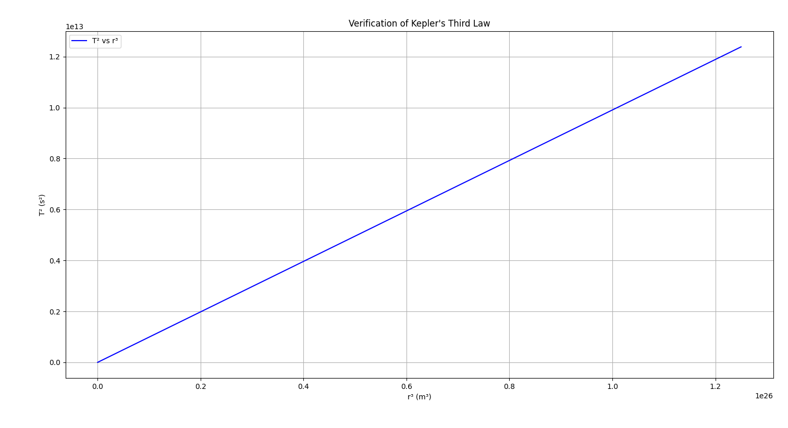

Problem 1
Orbital Period and Orbital Radius
1. Derivation of the Relationship
We start with Newton’s Law of Gravitation and the formula for centripetal force.
-
Gravitational Force:
[ F_g = \frac{G M m}{r^2} ] -
Centripetal Force:
[ F_c = \frac{m v^2}{r} ]
Equating the two forces for a body in circular orbit:
Canceling \( m \) and solving for \( v \):
The orbital period \( T \) is related to the velocity and orbital radius by:
Substitute into the velocity equation:
Solving for \( T^2 \):
✅ This shows that \( T^2 \propto r^3 \), which is Kepler’s Third Law for circular orbits.
2. Implications for Astronomy
- This relationship allows astronomers to:
- Determine the mass of a central body (e.g., a star or planet) by observing the motion of orbiting objects.
- Calculate orbital distances when the period is known.
- Model the structure and scale of planetary systems.
- It supports the understanding of exoplanetary systems by enabling inference of planetary positions and masses from light curves and Doppler shifts.
- It's essential in satellite design and space mission planning, ensuring correct orbital parameters for stable orbits.
3. Real-World Examples
Example 1: Moon’s Orbit Around Earth
- Mean radius \( r = 3.84 \times 10^8 \, \text{m} \)
- Orbital period \( T = 27.3 \, \text{days} = 2.36 \times 10^6 \, \text{s} \)
Calculate \( \frac{T^2}{r^3} \):
Example 2: Earth's Orbit Around the Sun
- Radius \( r = 1.496 \times 10^{11} \, \text{m} \)
- Period \( T = 365.25 \, \text{days} = 3.156 \times 10^7 \, \text{s} \)
These values align with Kepler’s Law and confirm its consistency across vastly different systems.
4. Computational Model Output
📷 Kepler's Third Law: Simulation Plot

✅ This simulation confirms a linear relationship between \( T^2 \) and \( r^3 \), visually validating Kepler’s Third Law.